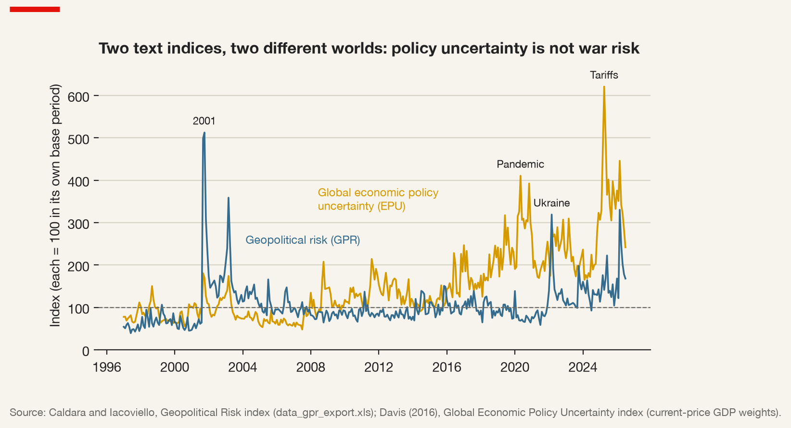
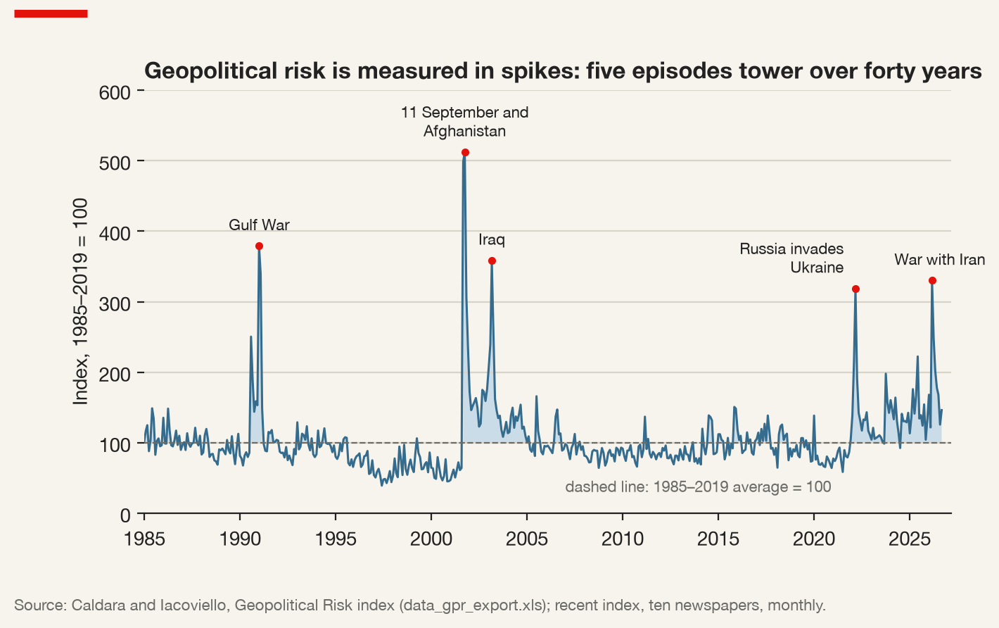
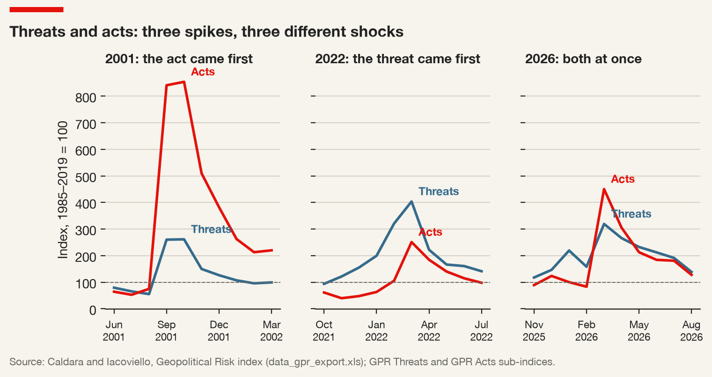
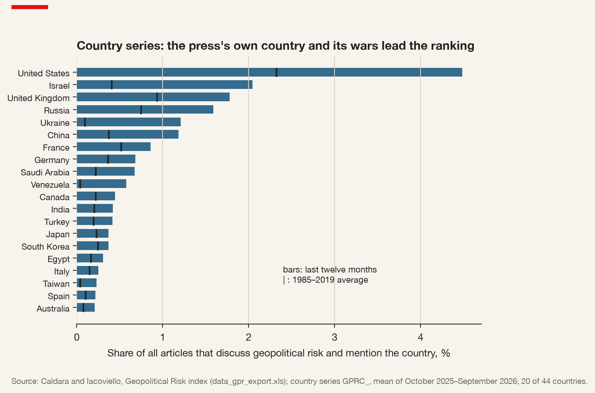
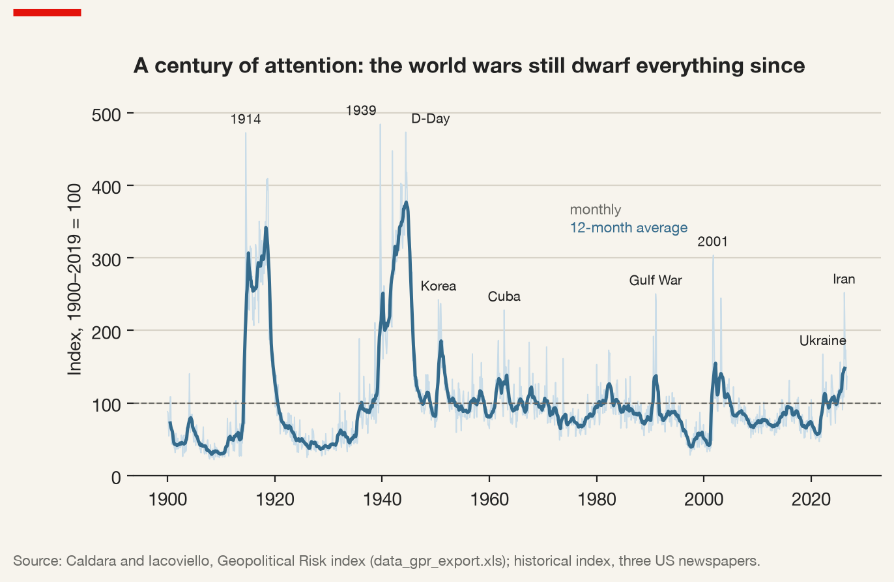

1 What Is Geopolitical Risk? Counting the Threat Before the War
1.1 A question about counting
Every risk function in every multinational firm already has a view about geopolitics. It sits in the annual report, in the paragraph on principal risks; it sits in the treasury’s hedging policy, in the procurement team’s list of single-source suppliers, in the country manager’s sense of which visas will be hard to renew next year. What it rarely has is a number — and when it does, the number usually comes from somewhere else, built by someone else, for a purpose the firm never examined.
This book begins with a deliberately narrow question: before a firm can manage geopolitical risk, what exactly is it counting? The question sounds pedantic. It is not. A board that is told “geopolitical risk is at its highest level in forty years” has been told something precise about a particular index, constructed from particular newspapers, normalised to a particular base period. Whether that statement should change a capital-expenditure plan in Monterrey or a supplier contract in Penang depends entirely on what was counted, and the person presenting the slide often does not know.
The answer this chapter builds towards is that geopolitical risk is not one thing to be measured but a family of things, each visible to some instruments and invisible to others. We start with the oldest distinction in the subject, between risk and uncertainty; separate three kinds of risk that are routinely confused; sort the instruments that measure them into six families; and then take one instrument apart — the Geopolitical Risk index of Caldara and Iacoviello (2022), the most widely used number in the field, read alongside the monthly file its authors publish. The chapter closes on what that index cannot tell a firm, because a measure whose limits cannot be stated should not be used.
1.2 Risk, uncertainty, and the ground in between
The modern vocabulary starts in 1921, with an economist trying to explain where profit comes from.
From the archive · Knight, 1921
Frank Knight’s Risk, Uncertainty and Profit began as a doctoral dissertation at Cornell and was published in 1921. Its problem was a theoretical embarrassment: in a perfectly competitive economy with full information, competition should drive profit to zero, yet profit plainly exists. Knight’s answer was that some of what businessmen face can be reduced to known odds and therefore insured, pooled or priced into costs — and some cannot.
The first he called risk: a situation in which the distribution of outcomes is known, either a priori, as with dice, or statistically, from the experience of many similar cases, as with fire insurance. The second he called uncertainty: a situation unique enough that no such distribution can be formed, and in which the decision-maker must act on judgement. Risk, being insurable, becomes a cost like any other. Uncertainty cannot be shifted to an insurer, and it is the bearing of uncertainty — the willingness to commit resources on a judgement no one can verify in advance — that profit rewards (Knight 1921).
Knight’s treatment was graded rather than binary: what matters is whether instances can be grouped into classes homogeneous enough to support an estimate. That is precisely the question a geopolitical risk analyst faces every morning.
Risk (in Knight’s sense) — a situation in which the probabilities of outcomes can be estimated, from theory or from the experience of sufficiently similar cases, so that the exposure can be priced, pooled or insured.
Uncertainty (Knightian uncertainty) — a situation in which no reliable probability distribution over outcomes can be formed, because the case is too unlike any class of past cases. It cannot be insured away; it can only be judged.
Geopolitics lives in the ground between the two. A shipping insurer pricing piracy off the Horn of Africa is close to Knightian risk: there are thousands of transits, hundreds of incidents, and a market for war-risk premiums that updates as the incidents accumulate. A board asking whether a particular strait will be blockaded within five years is close to Knightian uncertainty: there have been blockades, but never this one, by this state, against this coalition, with these weapons.
Much of geopolitical risk analysis, and much of this book, is an attempt to move questions from the second category towards the first, and to be candid about how far they move. Every index discussed in the chapters that follow is a device for grouping unlike events into classes so that something can be counted. Grouping is never neutral. When the Geopolitical Risk index counts an article about a nuclear test and an article about a terrorist bombing as two instances of the same thing, it has made a modelling choice about what is homogeneous. When the Correlates of War project averages steel output and population into one number for “power” (Chapter 3), it has made another. The discipline is not to avoid these choices — no measurement is possible without them — but to see them, state them, and ask what they do to the conclusion.
There is a practical corollary for the firm. Knightian risk can be transferred: political-risk insurance, war-risk cover on cargo, credit insurance on export receivables are all markets for it. Knightian uncertainty cannot be transferred, only managed — by flexibility, by diversification, by being willing to pay for the ability to change one’s mind. Much of what firms now call “resilience” is, in Knight’s terms, an admission that the relevant exposures are uncertain rather than risky, and that the premium has to be paid in redundancy because there is no one to pay it to.
The best-known corporate answer to uncertainty of this kind was not a number at all. In the late 1960s and early 1970s a planning group at Royal Dutch Shell stopped trying to forecast the price of oil and began to write scenarios: internally consistent stories of how the world might develop, so that managers would rehearse decisions against several futures rather than bet on one. Pierre Wack, who led the work, described its purpose as changing the mental models of the people who decide (Wack 1985). Indices and scenarios are complements: an index tells the firm which story the world is currently writing about; a scenario tells it what it would do if the story came true.
1.3 Three kinds of risk, and the layer that comes from outside
The second distinction is between three phrases that firms, consultancies and journalists use almost interchangeably: political risk, country risk and geopolitical risk. They answer different questions, attach to different units of analysis, and call for different instruments.
Political risk — the possibility that the government of a host country changes the rules applying to a foreign firm in a way that reduces the value of its investment: expropriation, forced renegotiation, discriminatory taxation, licence withdrawal, restrictions on repatriation. Its natural unit is the firm in a host country.
Country risk — the possibility that a country as a whole fails to pay, convert or transfer: sovereign default, capital controls, currency inconvertibility, a banking crisis. Its natural unit is the country, and its natural user is the lender.
Geopolitical risk — the possibility that relations between states and other political actors move against the firm: war, terrorism, sanctions, export controls, the formation of blocs, state-sponsored cyber operations. Its natural unit is the international system or a pair of states, and it frequently originates outside any country in which the firm operates.
Political risk is the oldest of the three in the international business literature, and its archetypes are dramatic. When Mexico nationalised the assets of foreign oil companies in 1938, or Iran nationalised the Anglo-Iranian Oil Company in 1951, the threat came from the host government and fell on identifiable foreign firms. The scholarly literature that grew up in the 1960s and 1970s, as decolonisation multiplied the number of host governments and expropriations became frequent, was preoccupied with this kind of event. Its classic synthesis is Kobrin (1979), who complained that “political risk” was used to mean too many things — sometimes the political event itself, sometimes the instability of a regime, sometimes the consequences for a firm’s operations — and that the literature rarely connected the first to the last.
Kobrin’s lasting contribution was to insist that risk is a property of the relationship between an environment and a particular firm, not of the environment alone. Political instability matters to a foreign investor only through specific contingencies that affect specific operations; a coup that changes nothing about the mining code may be irrelevant to the mining company, while a quiet amendment to a tax treaty may be decisive. From this followed the distinction between macro risk, which affects all foreign firms in a country, and micro risk, which falls on a sector or a single firm. Kobrin’s own count of forced divestment in developing countries bore the distinction out: expropriation in the 1960s and 1970s was, for the most part, selective — aimed at particular industries rather than at foreign capital as such (Kobrin 1980).
Why particular industries? Raymond Vernon’s answer was that the bargain between a foreign investor and a host government changes over the life of the investment (Vernon 1971). Before the investment is made, the firm holds the cards: capital, technology and the choice of where to go. Once the mine is dug, the capital is sunk, the technology has been learned locally, and the host’s need for the firm declines while its ability to capture the rent rises. The bargain obsolesces. The insight has outlived the era of nationalisation, because it describes any relationship in which one party’s commitment is irreversible and the other’s is not.
Country risk grew from a different root — the bank lending of the 1970s to developing-country governments, and the debt crisis that followed. Its question is whether a country will service its obligations and let money move; its instruments are sovereign ratings, debt-sustainability analysis and the spreads on sovereign bonds and credit default swaps.
Geopolitical risk adds a third layer that neither earlier tradition was designed to see: risk that originates outside the host country. A Canadian firm operating in Vietnam can be hurt by a decision taken in Washington about Chinese inputs, by a decision in Beijing about rare-earth exports, by a decision in Brussels about which payment systems may be used for which counterparties, or by a naval incident in a sea lane neither Canada nor Vietnam controls. The host government may be perfectly stable and perfectly friendly; the threat travels through the firm’s suppliers, customers, banks and networks.
The three are not mutually exclusive. Take a Canadian bank with a subsidiary in Moscow in February 2022. It faces political risk when the host state restricts the ability of foreign firms to sell their assets and leave; country risk when capital controls trap the subsidiary’s earnings; and geopolitical risk in its purest form when its own government, acting with its allies, forbids transactions on which the subsidiary depends. All three arrive in the same quarter, through different channels, and call for different responses — a write-down, a liquidity plan, a compliance review. A risk function with only one of the three words in its vocabulary sees a third of the problem.
1.4 Six ways of counting
If geopolitical risk is a family of phenomena, it is measured by a family of instruments, and the instruments disagree. It helps to sort them by what they count, because what an indicator counts determines what it cannot see.
| Family | What it counts | Examples in this book | Strength | Blind spot |
|---|---|---|---|---|
| Event-based | things that happened, coded from reports | cyber incidents (Ch. 8), sanctions (Ch. 10) | concrete, datable | only what was reported and coded |
| Text-based | how much the press or firms talk about a risk | GPR (this chapter), EPU (Ch. 7) | timely, long, high-frequency | measures attention, not exposure |
| Expert-based | scores assigned by analysts or surveys | governance indicators, commercial ratings | reaches latent concepts | opaque, sticky, perception-driven |
| Structural | slow-moving features of the system | capabilities (Ch. 3), trade dependence (Ch. 4) | explains why | rarely says when |
| Market-based | prices that embed risk | sovereign CDS spreads, implied volatility | forward-looking, daily | mixes risk with risk appetite |
| Firm-level | risk as perceived by firms themselves | earnings-call text (Ch. 7), disclosures | speaks to the decision | self-reported, listed firms only |
A threat never carried out leaves no event. Text-based indicators — the Geopolitical Risk index, the Economic Policy Uncertainty index of Baker, Bloom, and Davis (2016), the firm-level political-risk measure of Hassan et al. (2019) — measure attention, related to but not the same as the risk any reader faces. Expert-based indicators, such as the Worldwide Governance Indicators (Kaufmann, Kraay, and Mastruzzi 2011), pay for their reach in opacity. A market spread can widen because danger rose or because investors grew more fearful of the same danger.
No family is enough on its own, and the argument for triangulating across several is not that more is better. It is that the families fail in different ways, so their disagreements carry information. When the text is calm and the market is not, someone may be pricing something the press has not yet seen. A single index can only tell its own story; three indices that quarrel force the analyst to say which one to believe, and why.
Even two instruments from the same family quarrel. Figure 1.1 sets the Geopolitical Risk index beside the global Economic Policy Uncertainty index of Davis (2016), a GDP-weighted average of national policy-uncertainty indices built, like GPR, by counting newspaper articles. Over the 355 months from January 1997 to July 2026 their correlation is 0.26; averaged by year it rises only to 0.39. The months that define each series barely overlap. In October 2001 geopolitical risk stood at 513 and policy uncertainty at 170. In May 2020, in the first pandemic spring, the order was reversed: policy uncertainty at 410, geopolitical risk at 69. In April 2025, when the United States announced sweeping tariffs, policy uncertainty reached 621, the highest value in its history, while geopolitical risk stood at 141. Only in March 2022 and March 2026, with wars that were also economic-policy events, did both indices spike together.

The lesson is not that one index is right. It is that “uncertainty” in the newspapers comes in kinds, and a firm’s exposure to each is different. A tariff shock reaches a manufacturer through market access and inputs within weeks; a terrorist attack in New York reached airlines, insurers and tourism through assets and people, and most manufacturers hardly at all. The upward drift of policy uncertainty since 2016 is also a reminder that much of what firms now experience as “geopolitics” — tariffs, export controls, investment screening — arrives through economic policy, and is counted by the instrument that does not carry the word.
1.5 How a newspaper archive becomes an index
The rest of the chapter takes one text-based instrument apart. Dario Caldara and Matteo Iacoviello, economists at the Federal Reserve Board, published the Geopolitical Risk index in the American Economic Review in 2022, after circulating it for several years as a working paper. It has become the default series for anyone — central bank, investment bank, consultancy or researcher — who needs a number for geopolitical risk. That ubiquity is the reason to understand its construction exactly.
1.5.1 The definition
Geopolitical risk, in the authors’ words, is “the threat, realization, and escalation of adverse events associated with wars, terrorism, and any tensions among states and political actors that affect the peaceful course of international relations” (Caldara and Iacoviello 2022).
Read it for what is in and what is out. In are threats as well as realisations — the index is meant to rise when war becomes more likely, not only when it starts. In are non-state actors: “political actors”, not only states, which is how terrorism enters. In are tensions short of war. Out are domestic politics, elections, regulation and economic policy, which belong to other indices. The definition is about relations between actors, not about what a host government does to a firm.
Geopolitical Risk (GPR) index — a monthly text-based index, constructed by Caldara and Iacoviello (2022), equal to the share of articles in a fixed set of major newspapers that discuss adverse geopolitical events and threats, rescaled so that its average over a base period equals 100.
1.5.2 Four steps
The construction has four steps, and each is a decision that could have been taken differently.
The corpus. The recent index, from 1985, is built from the electronic archives of ten leading newspapers published in the United States, the United Kingdom and Canada. The historical index, from 1900, uses three American newspapers whose archives reach that far back. This is the anglophone press of three allied countries, and the historical series is the American press alone.
The dictionary. An article counts as a GPR article if it contains words from one of eight categories: war threats, peace threats, military build-ups, nuclear threats, terror threats, the beginning of war, the escalation of war, and terror acts. In most categories the search requires a combination — a word for the threat and a word that anchors the article to geopolitics — so that an article about a “price war” does not qualify. Designing such a dictionary is a trade-off between precision (only relevant articles) and recall (all relevant articles).
The share. For each month, the number of GPR articles is divided by the total number of articles published. The division matters more than it looks. The authors’ own file shows that the monthly count of articles in the ten recent newspapers was about 11,600 in January 1985, about 33,400 in January 2000, and under 14,000 in September 2026. A raw count would have tripled and then halved with no change in the world. The share cares only about what fraction of the newspapers’ attention went to war and terror.
The normalisation. Finally the share is rescaled so that its average over 1985–2019 equals 100; the historical index is normalised to its own average over 1900–2019. A reading of 300 means that the share of articles discussing geopolitical threats and acts was three times its base-period average. It does not mean that risk was three times higher in any sense a probability could express; it means that attention was.
The misconception to drop now. A high GPR reading does not mean that risk is high for a particular firm. It means that the anglophone press was writing a great deal about geopolitical tension that month. The second statement is what the index measures; the first is an inference that requires everything else in this book.
1.5.3 Forty years at a glance
Figure 1.2 draws the recent index month by month from January 1985 to September 2026, the latest month in the file. It rarely strays far from its average. The median month stands at 93; only 3.4 per cent of months exceed 200; eight months exceed 300, and they belong to five episodes — the Gulf War of 1990–91, the attacks of September 2001 and the war in Afghanistan that followed, the invasion of Iraq in 2003, the Russian invasion of Ukraine in 2022, and the war with Iran in 2026. Geopolitical risk, as the press records it, is a series of spikes separated by long stretches of near-normality, and the longest calm in the series — the late 1990s, when the annual average fell to 51 in 1997 and 57 in 2000, about half the base — sits just before its highest peak.

The second feature is less visible in any single month and more important for a firm: since 2022 the index has not come back down. Its annual average was 77 in 2020 and 82 in 2021; it was 158 in 2022, 122 in 2023, 134 in 2024, 145 in 2025 and 188 in the first nine months of 2026. After the invasion of Iraq the index was back at its base by 2005 (annual average 102) and stayed near it for fifteen years; since 2022 each new spike has started from a higher floor. That is a change in level, and it matters because the real-options argument below turns on whether uncertainty is expected to resolve. A firm can wait out a spike; it cannot wait out a plateau.
Table 1.1 lists the ten highest months, with the two sub-indices introduced below. Eight of the ten belong to the two wars against Iraq and to 2001; two belong to the 2020s. The headline blends threats and acts: March 2022 and March 2026 stand at almost the same level, 319 and 330, but one was mostly threat and the other mostly act.
| Month | GPR | Threats | Acts | Episode |
|---|---|---|---|---|
| October 2001 | 513 | 261 | 854 | War in Afghanistan begins |
| September 2001 | 499 | 260 | 841 | Attacks of 11 September |
| January 1991 | 379 | 360 | 480 | Gulf War air campaign |
| March 2003 | 359 | 362 | 429 | Invasion of Iraq |
| February 1991 | 339 | 254 | 490 | Gulf War ground campaign |
| March 2026 | 330 | 319 | 450 | War with Iran |
| March 2022 | 319 | 404 | 251 | Russian invasion of Ukraine |
| November 2001 | 307 | 150 | 510 | War in Afghanistan |
| April 2003 | 256 | 213 | 332 | Iraq: fall of Baghdad |
| August 1990 | 250 | 354 | 128 | Iraq invades Kuwait |
1.5.4 Threats and acts
The first five categories form the GPR Threats sub-index; the last three — the beginning of war, the escalation of war, terror acts — form GPR Acts. The split is the most useful thing in the paper for a firm, because the two need not move together. Threats can build for months and subside without anything happening; acts can arrive with almost no prior threat.
Figure 1.3 shows two patterns, and a third. In the autumn of 2001 acts leap from 75 in August to 841 in September and 854 in October, while threats rise only to 261: an attack with almost no public prelude. Over the winter of 2021–22 the order is reversed: threats climb from 122 in November to 321 in February and 404 in March — the highest threat reading in the recent series, debated in public for weeks — while acts stay below their average until the invasion and peak at 251. The third panel is the war of the United States and Israel against Iran, which began at the end of February 2026. Here the two moved together: in March acts jumped to 450, their highest since 2001, and threats to 319. Across the recent series the two sub-indices correlate at only 0.59.

The three shapes call for different preparation. A shock of the 2001 kind cannot be anticipated from the index; the only defence is a plan that already exists — insurance in force, a second supplier qualified — when the act arrives. A shock of the 2022 kind offers weeks in which threats accumulate in public, and a firm that has decided in advance what it will do at a given level of threat can use them. A shock of the 2026 kind, preceded by months of elevated but inconclusive threat, is the hardest to act on, because an index that has been high for a while teaches its readers to discount it.
The authors report that threats, and not only realised acts, depress economic activity. The implication for a firm is blunt: it does not need the war to pay its cost. If what moves investment is the threat, the cost is borne in the months of tension, by firms that delay, hedge and wait, whether or not the feared event ever occurs.
From the archive · The Cuban missile crisis, 1962
In mid-October 1962, photographs taken by American U-2 reconnaissance aircraft showed Soviet medium-range ballistic missile sites under construction in Cuba. On 22 October President Kennedy announced the discovery in a televised address and a naval “quarantine” of the island. For the next six days the two nuclear powers negotiated in public and in private while ships approached the quarantine line. On 28 October Khrushchev announced that the missiles would be dismantled and returned to the Soviet Union; the United States pledged not to invade Cuba and, privately, agreed to withdraw its own Jupiter missiles from Turkey.
No war began. In the categories of the GPR dictionary, the crisis is almost entirely threats: nuclear threats, military build-ups, war threats. In the historical series, October 1962 stands at well over twice the 1900–2019 average — the index doing exactly what its definition promises, registering the threat of adverse events and not only their realisation.
The episode also shows the limits of the clock. The risk was greatest at a moment, not over a month: the crisis lasted thirteen days. A monthly index records it as one high observation, and an annual one nearly erases it — averaged over 1962, the historical index is only about a quarter above its long-run mean. A firm deciding whether to load a ship that week needed a finer clock.
1.5.5 Country-specific indices
For 44 countries, the authors also publish country-specific series: the same search, restricted to articles that also mention the country, in columns labelled GPRC_ and a three-letter ISO code. They are not normalised to 100; they are the percentage of articles that both discuss geopolitical risk and mention the country. A country can be the source of tension, its victim, its mediator or merely its location, and the count does not distinguish them. In March 2022 the series for Russia and for Ukraine stood at almost the same level, close to nine per cent of all articles: to the index, the invader and the invaded were two equally tense places.
The list is itself informative. It includes Ukraine, Israel, Taiwan and Venezuela and most large economies; it does not include Iran, Iraq, Pakistan or North Korea, and Africa is represented by Egypt, Tunisia and South Africa alone. The selection reflects where economic and financial data are rich enough for the comparisons the series were built for, not where geopolitical risk is greatest.
Figure 1.4 ranks the twenty countries with the highest readings over the twelve months to September 2026, against their own average over 1985–2019. Three features stand out. The first is the weight of the newspapers’ home country. The United States heads the ranking at 4.5 per cent of all articles, almost double its long-run average of 2.3 and more than twice the next country, because American newspapers write about American wars and threats; the United Kingdom comes third. The country series measure geopolitical risk as seen from Washington, London and Toronto.

The second is the size of the departures from the past. Measured against its 1985–2019 average, Venezuela’s reading over the last twelve months is almost fourteen times higher, Ukraine’s nearly thirteen, Taiwan’s almost six, Israel’s five and Denmark’s almost five. These ratios, which compare a country with itself, are the most useful thing the country series offer a firm: a subsidiary in Copenhagen does not need to know that Denmark ranks twenty-sixth, but it may need to know that its host is being written about in the language of threat at five times the usual rate.
The third is what the ranking cannot show. In March 2026 the series that jumped most were those of the United States (8.7 per cent of all articles), Israel (6.4), the United Kingdom, Russia and Saudi Arabia. Iran, the country at the centre of that month’s war, has no series at all: it is not among the 44. A firm relying on the country series would have seen that war only through Iran’s neighbours and adversaries.
1.6 Does it measure something real?
A text-based index is a hypothesis about the world: that the frequency of certain words in certain newspapers tracks a phenomenon of interest. The paper tests the hypothesis in three ways, and reading them is good training in how to evaluate an index one did not build.
The first is narrative. The index should spike when, on any reasonable reading of history, geopolitical tension spiked: the two World Wars, Korea, the Cuban missile crisis, the Gulf War, 11 September 2001, Iraq in 2003, Ukraine in 2022. It does. In the historical series the highest month is September 1939, followed closely by June 1944 and August 1914; in the recent series it is October 2001, followed by September 2001 and January 1991. This is a necessary test and a weak one.
Figure 1.5 shows the narrative test at the scale of the century. The two world wars dominate everything: the historical index reached 472 in August 1914, 484 in September 1939 and 473 in June 1944, and averaged 213 across the whole of the 1940s. Measured on this scale, the events that dominate the recent series shrink. October 2001 stands at 304, March 2026 at 252 and March 2022 at 167, below the Cuban missile crisis at 228. The average since 2020 is about 100. Against total war the present looks ordinary; against 1985–2019 it looks exceptional. The base period is a choice of what to compare the present with.

The historical file also reports the share of articles in each of the eight dictionary categories, and the composition tells a story the headline hides (Table 1.2). In the decade of the First World War, articles about the beginning and the escalation of war made up almost five per cent of everything the three newspapers printed; terror was all but absent. By the 2000s, terror acts were the largest single category, at 1.2 per cent of all articles, up from almost nothing in the 1910s, while articles about wars beginning had fallen to 0.4 per cent. Nuclear threats appear in the 1940s, peak in the 1960s and recede. In the 2020s so far, military build-ups are the largest category at 1.8 per cent — higher than in either world-war decade — and war threats have doubled from their 2000s level. The same reading meant a war in Europe in one decade, bombings in another, and rearmament in a third.
| Decade | War threats | Peace threats | Military build-ups | Nuclear threats | Terror threats | Beginning of war | Escalation of war | Terror acts | Any category |
|---|---|---|---|---|---|---|---|---|---|
| 1910s | 0.91 | 0.14 | 1.13 | 0.00 | 0.01 | 2.38 | 2.23 | 0.01 | 6.17 |
| 1940s | 0.95 | 0.22 | 1.25 | 0.27 | 0.02 | 2.13 | 3.47 | 0.10 | 7.68 |
| 1960s | 0.61 | 0.20 | 1.04 | 0.94 | 0.04 | 0.49 | 0.78 | 0.31 | 3.78 |
| 1980s | 0.35 | 0.09 | 1.05 | 0.81 | 0.27 | 0.41 | 0.56 | 0.63 | 3.40 |
| 2000s | 0.26 | 0.06 | 0.72 | 0.50 | 0.39 | 0.40 | 0.56 | 1.23 | 3.28 |
| 2020s (to Sept. 2026) | 0.56 | 0.04 | 1.79 | 0.44 | 0.14 | 1.08 | 0.44 | 0.42 | 3.60 |
The second is audit. The authors had samples of flagged articles read by people, to estimate how often the algorithm counted an article a human would not consider to be about geopolitical risk, and how often it missed one a human would. A text measure whose false-positive rate is unknown is a measure whose movements cannot be interpreted.
The published file also carries alternative versions of the index — one with a narrower search, one with a broader search that requires the threat word and the geopolitical anchor only to appear in the same article rather than close together, and one that drops the excluded words used to screen out false positives. The narrow version moves almost in lockstep with the headline index, with a monthly correlation above 0.9; the broad one much less, at about 0.64, and its highest month is March 2022 rather than the autumn of 2001. “The” geopolitical risk index is one point in a space of defensible choices.
Table 1.3 sets the four versions side by side. The disagreement is not only about levels but about rankings of the episodes that matter. On the narrow version, March 2022 (406) stands higher than March 2026 (350); on the version without excluded words it stands higher still, at 390 against 265; on the headline index the order is reversed, 319 against 330. A board told that the spring of 2026 was “the most dangerous month since the invasion of Iraq” has been told something true of one of four published series and false of the other three. The narrow version exaggerates the 2001 peak, at 889; the broad one flattens the peaks and lifts the background.
| Version | Correlation with headline | Highest month (value) | March 2022 | March 2026 |
|---|---|---|---|---|
| Headline (GPR) | 1.00 | October 2001 (513) | 319 | 330 |
| Basic (narrow search) | 0.93 | September 2001 (889) | 406 | 350 |
| Excluded words kept | 0.84 | September 2001 (511) | 390 | 265 |
| Broad (AND search) | 0.64 | March 2022 (284) | 284 | 176 |
The third is economic content. If the index measures something real, it should be related to economic outcomes in the ways theory predicts. The paper finds that higher geopolitical risk predicts lower investment and employment, and more so in industries more exposed to it.
None of the three tests establishes that the index measures risk in Knight’s sense — a probability of adverse outcomes. What they establish is that it measures attention to geopolitical adversity, that this attention is concentrated in the right months, that the counted articles are mostly about the right things, and that the attention is associated with economic decisions. That is a considerable achievement. It is also narrower than the word “risk” in the name suggests, and the gap between the two is where the misuse of the index lives.
1.7 Why waiting has value
Why should a firm’s investment fall when the newspapers write about war, if the war has not yet begun and may never begin? The answer comes from the theory of irreversible investment under uncertainty.
The real-options channel — when an investment is costly to reverse and its payoff depends on information that will arrive later, the opportunity to wait has value; an increase in uncertainty raises that value and so leads firms to postpone investment, hiring and entry, even if expected returns are unchanged.
Bernanke (1983) made the argument for cyclical investment: a firm that waits for news gives up some return, but avoids having sunk capital into a project the news would have shown to be a mistake. Because a plant cannot be un-built at its cost, bad outcomes weigh more heavily in the decision than good ones, and more uncertainty about them makes waiting more attractive. Dixit and Pindyck (1994) gave the idea its general treatment: an unexercised investment opportunity is like a call option, and exercising it early destroys the option’s time value.
Bloom (2009) turned the theory into a macroeconomic prediction and tested it: a spike in uncertainty should produce a rapid drop in hiring and investment, followed by a rebound as the uncertainty resolves. The pause-and-rebound pattern is the fingerprint of the real-options channel. Political uncertainty works the same way: Julio and Yook (2012) find that corporate investment falls before national elections, when the identity of the next government is unknown, and recovers after them. A geopolitical threat raises uncertainty about future states of the world without yet changing the present one — the purest form of the shock the model describes — and Caldara and Iacoviello’s finding that threats depress investment is, read this way, Bernanke’s 1983 argument applied to a new source of uncertainty.
The firm-level implication is concrete. The decisions most exposed to geopolitical threats are large, lumpy and hard to reverse: a greenfield plant, an acquisition, a take-or-pay supply contract. A firm that wants to keep investing through a period of tension is paying to convert the first kind of decision into the second — leasing rather than building, dual-sourcing rather than committing, staging an investment in tranches with exit points.
Consider a Canadian fertiliser exporter in March 2022, with the Threats sub-index at the highest level since 1985. “Monitoring the situation” is not a response. A response names a decision — hedge the currency, delay the warehouse in Europe, sign longer contracts with customers who have lost a Russian or Belarusian supplier — and the threshold that would trigger it. Some decisions are worth taking because of the uncertainty: a longer contract with a stranded customer converts a volatile opportunity into committed revenue. Others are worth postponing for the same reason: the warehouse is irreversible, and its value depends on how the war ends. The index can be an input to the threshold that separates the two. It cannot be the threshold, because it says nothing about the exporter in particular.
1.8 From the system to the profit and loss account
A firm needs something more specific than an aggregate: the routes by which a change in relations between states reaches its costs, revenues and assets. This book uses five, and they recur in every chapter.
| Channel | How it reaches the firm | An example | Where it returns |
|---|---|---|---|
| Market access | tariffs, quotas, bloc-based trade diversion, procurement bans | a market closes to firms from a rival bloc | Chapter 4 |
| Inputs | a critical input or service controlled by a foreign state or a single provider | a critical service from one satellite operator | Chapter 11 |
| Finance and payments | sanctions on banks, asset freezes, exclusion from payment networks | a correspondent bank exits a jurisdiction | Chapter 10 |
| Assets and people | conflict, expropriation, evacuation, detention | staff evacuated, a plant abandoned | Chapters 3, 5 |
| Data and operations | state-sponsored cyber operations, data-localisation demands | operations halted by an intrusion | Chapter 8 |
The same geopolitical event reaches different firms through different channels, and therefore with different magnitudes and timing. A war in a grain-exporting region reaches a food processor through inputs, a shipping line through assets and people, a bank through finance and payments, and a software firm through data and operations when the conflict spills into cyberspace. A global index records one event. A firm’s exposure is a vector, and the index is a scalar.
The channels also say where the evidence sits inside the firm: market access in the geographic breakdown of revenue; inputs in the supply-chain map; finance in the treasury’s list of banks, currencies and payment routes; assets in the fixed-asset register and the list of staff posted abroad; data with the chief information security officer. An assessment that does not ask each of these offices a question is an assessment written from the newspaper.
1.9 What the index cannot see
Every measure has a boundary beyond which it stops licensing conclusions, and the boundary is part of the measure. The GPR index has at least four.
The first is that it measures attention in the anglophone press. The editors of American, British and Canadian newspapers decide what is news for their readers, and their readers are not in Abidjan or Shenzhen. A violent dispute that dominates the regional press of West Africa can leave the index untouched; a crisis involving the United States can dominate it. That is legitimate to measure, and it is not the risk faced by a subsidiary elsewhere.
The second is that it is global. One number per month for the world cannot distinguish a risk that falls on the Baltic from one that falls on the Taiwan Strait, and for most firms that distinction is the whole question. The country series help, but only for 44 countries, and only in the sense of “mentioned together with tension”.
The third is that attention fades while risk persists. Newspapers cover change. A frozen conflict — a ceasefire line, a sanctions regime in its tenth year — can be a constant and material risk for firms near it while generating ever fewer articles. On the index, a persistent risk looks like a declining one. Firms often hold assets for longer than editors hold attention.
The fourth is that the index is not a forecast. It rises with events and threats as they are reported. Its predictive content for investment arises because firms respond to the same reported threats; that is a statement about behaviour, not about the probability of war.
A fifth follows from the construction. The denominator is all articles: if newspapers devote their space to an election or a pandemic, the geopolitical share can fall with no change in geopolitics. And the numerator depends on a fixed vocabulary; a new kind of threat — a cyber operation against a power grid, a satellite jammed in orbit — counts only insofar as journalists describe it in the words of war and terror.
1.10 How a concept becomes data
Every measure in this book passes through the same sequence. A concept — geopolitical risk, defined in words — becomes an operational definition: the eight categories, the ten newspapers, the share, the base period. The operational definition becomes a dataset: a file with one row per month and columns for the recent index, its components, the historical index, the country series, the article counts and the alternative dictionaries. The dataset becomes a figure. And the figure becomes an argument, the moment someone puts it on a slide in front of a board.
Every link is a place where meaning can be lost. Between concept and operational definition, everything the dictionary does not capture is dropped. Between operational definition and dataset, the series is revised: the file is updated monthly and the authors refine it, so a figure drawn from the current file will differ, in places, from the one printed in the journal. Between dataset and figure, choices of frequency and smoothing change what the eye sees. The recent index stood above 500 in October 2001; its average over the whole of 2001 is about 170. A geopolitical shock is a monthly phenomenon, and a yearly average buries it. And between figure and argument, the slide’s title replaces the paper’s caveats.
1.11 A short review of the literature
The distinction between measurable risk and unmeasurable uncertainty is due to Knight (1921), and it remains the vocabulary of the field. In international business, political risk became a subject in its own right in the 1960s and 1970s, when expropriations were frequent: Vernon (1971) explained why the bargain between investor and host decays once capital is sunk; Kobrin (1979) defined political risk as a property of the firm–environment relationship and distinguished macro from micro risk; Kobrin (1980) showed that forced divestment was selective rather than wholesale. Later work moved to measurement: Henisz (2000) built an index of political constraints on policy change, and Jensen (2003) showed that democracies attract more foreign direct investment. The expert-based tradition is summarised by the Worldwide Governance Indicators (Kaufmann, Kraay, and Mastruzzi 2011). Bremmer and Keat (2009) made the practitioner’s case for political knowledge as an investment input, and Wack (1985) described how one firm learned to plan under uncertainty it could not price.
The economics of why uncertainty matters for investment runs from Bernanke (1983) through the real-options synthesis of Dixit and Pindyck (1994) to Bloom (2009), who showed that uncertainty shocks produce a sharp fall and rebound in activity; Julio and Yook (2012) documented the same mechanism around elections.
The measurement of uncertainty from text is the most recent strand. Baker, Bloom, and Davis (2016) built the Economic Policy Uncertainty index from newspaper articles and validated it by human audit — the template Caldara and Iacoviello (2022) followed for geopolitical risk, adding the split between threats and acts, a historical series to 1900, and country-specific indices. Hassan et al. (2019) moved the method to the firm, measuring each company’s political risk from its own earnings calls — the measure examined in Chapter 7.
The through-line is a shift of the unit of analysis: from the host country, to the system, and back to the firm. The indices have become better at counting what is said. Whether what is said is what a firm is exposed to remains the open question.
1.12 What a count of articles does not license
The Geopolitical Risk index does what it says. It measures, month by month and for more than a century, how much of the attention of a fixed set of anglophone newspapers went to war, terror and the threat of both; it separates the threat from the act; and it moves with investment in the way the theory of irreversible decisions predicts. That makes it the natural starting point for anyone who wants to put a number on geopolitical risk. It does not make it the end point.
What the index does not license is the inference from the system to the firm. A high reading says that the press of three allied countries was preoccupied with geopolitical adversity; it does not say that a given subsidiary, supplier or payment route was exposed to it. A falling reading says that the press has moved on; it does not say that the frozen conflict next to a firm’s plant has thawed. Whether a spike reaches the firm depends on the channel and on the firm’s position in it, none of which a count of articles can observe.
This is not a criticism of Caldara and Iacoviello. It is a statement about the division of labour between a measure and a judgement, and Knight’s distinction returns here in practical form. The part of geopolitical risk that can be counted is real, and the index captures much of its timing. The part that cannot — the particular blockade, the particular sanction, the particular expropriation — has to be judged, by someone who knows where the firm’s exposures lie. The most useful sentence to write beside any chart of the index is a sentence about what the chart cannot see: a supplier, a subsidiary, a payment route, named, with the channel through which the system would reach it.
The chapters that follow can be read as a sequence of instruments built to see what this one misses: the distribution of power (Chapter 3), the trade ties through which conflict travels (Chapter 4), the institutions and standards that govern access to finance and markets (Chapters 5 and 6), the firm’s own words (Chapter 7), and the networks through which states now reach firms directly. Each has its own blind spot. Read against one another, they come closer to what a board needs to know than any one of them can alone.